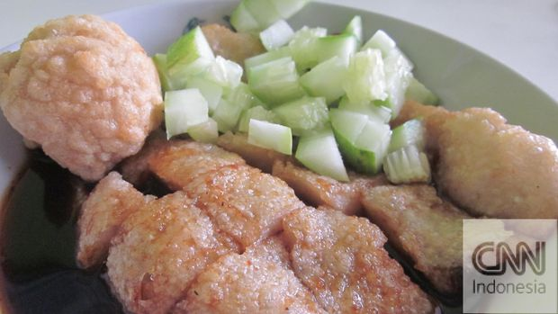

Resep Empek-empek Palembang
Bahan-bahan :
- 500 gram ikan tenggiri, giling halus.
- 300 ml air es.
- 250 gram tepung sagu.
- 1 sdt garam.
- 2 siung bawang putih, haluskan.
- 2 butir telur untuk isian.
Bahan Cuko :
- 250 gram gula merah.
- 50 gram asam jawa.
- 500 ml air.
- 10 buah cabai rawit, haluskan.
- 5 siung bawang putih, haluskan.
- 1 sdt garam.
Cara Membuatnya :
- Campur ikan tenggiri, air es, bawang putih, dan garam. Aduk hingga rata.
- Tambahkan tepung sagu sedikit demi sedikit sambil terus diaduk hingga adonan kalis.
- Bentuk adonan sesuai selera, masukkan telur sebagai isian jika diinginkan.
- Rebus empek-empek dalam air mendidih hingga mengapung, angkat dan tiriskan.
- Goreng empek-empek hingga kecokelatan. Sajikan dengan cuko.